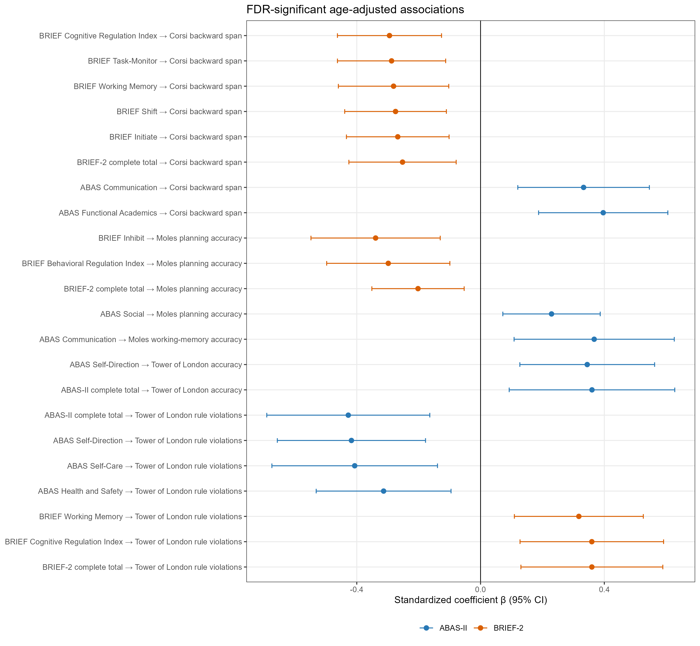
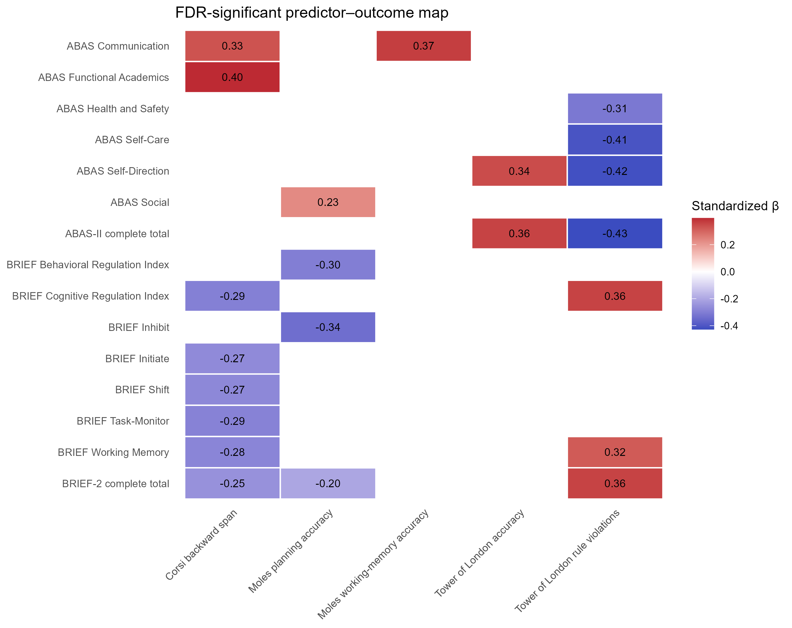

Primary Age-Adjusted Models
The screened analytic sample comprised 99 children. Across the five prespecified FDR families, 216 questionnaire coefficient tests were estimated and 22 survived Benjamini–Hochberg correction. These coefficients should not be interpreted as 22 independent phenomena because correlated questionnaire scales frequently mapped onto the same cognitive outcomes.
Five FDR-significant coefficients were observed in the separate-total models; no coefficient survived FDR in the joint-total models. 17 significant coefficients involved ABAS-II subscales, BRIEF-2 subscales, or BRIEF-2 indices.
Planning accuracy was associated with 4 questionnaire predictors after FDR correction. No FDR-significant association was observed for either excess-tile outcome, PWM accuracy, or Corsi forward span.
| FDR family | Terms | Raw p<.05 | FDR q<.05 | Median n |
|---|---|---|---|---|
| abas_subscales | 72 | 19 | 8 | 96 |
| brief_indices | 27 | 8 | 3 | 96 |
| brief_subscales | 81 | 23 | 6 | 96 |
| totals_joint | 18 | 2 | 0 | 94 |
| totals_separate | 18 | 5 | 5 | 95 |
Complete Questionnaire Totals
| Predictor | Outcome | n | β | 95% CI | p | q | ΔR² | Partial R² |
|---|---|---|---|---|---|---|---|---|
| ABAS-II complete total | Tower of London rule violations | 95 | -0.427 | [-0.691, -0.164] | .001 | .019 | 0.124 | 0.134 |
| BRIEF-2 complete total | Tower of London rule violations | 96 | 0.360 | [0.130, 0.589] | .002 | .019 | 0.126 | 0.136 |
| BRIEF-2 complete total | Corsi backward span | 96 | -0.252 | [-0.426, -0.079] | .004 | .026 | 0.062 | 0.070 |
| BRIEF-2 complete total | Moles planning accuracy | 91 | -0.202 | [-0.351, -0.053] | .008 | .030 | 0.039 | 0.041 |
| ABAS-II complete total | Tower of London accuracy | 94 | 0.360 | [0.093, 0.628] | .008 | .030 | 0.089 | 0.099 |
Questionnaire Scales and BRIEF-2 Indices
| Predictor | Outcome | n | β | 95% CI | p | q | ΔR² | Partial R² |
|---|---|---|---|---|---|---|---|---|
| ABAS Functional Academics | Corsi backward span | 96 | 0.396 | [0.188, 0.605] | <.001 | .014 | 0.091 | 0.102 |
| ABAS Self-Direction | Tower of London rule violations | 97 | -0.417 | [-0.657, -0.178] | <.001 | .023 | 0.146 | 0.159 |
| ABAS Self-Direction | Tower of London accuracy | 96 | 0.345 | [0.127, 0.563] | .002 | .039 | 0.100 | 0.112 |
| ABAS Communication | Corsi backward span | 96 | 0.333 | [0.120, 0.546] | .002 | .039 | 0.073 | 0.081 |
| ABAS Self-Care | Tower of London rule violations | 97 | -0.407 | [-0.674, -0.139] | .003 | .042 | 0.131 | 0.142 |
| ABAS Social | Moles planning accuracy | 92 | 0.229 | [0.072, 0.387] | .004 | .049 | 0.048 | 0.049 |
| ABAS Health and Safety | Tower of London rule violations | 96 | -0.313 | [-0.531, -0.095] | .005 | .049 | 0.087 | 0.094 |
| ABAS Communication | Moles working-memory accuracy | 91 | 0.367 | [0.108, 0.626] | .005 | .049 | 0.090 | 0.100 |
| BRIEF Cognitive Regulation Index | Corsi backward span | 96 | -0.294 | [-0.463, -0.126] | <.001 | .016 | 0.081 | 0.091 |
| BRIEF Cognitive Regulation Index | Tower of London rule violations | 96 | 0.360 | [0.128, 0.592] | .002 | .030 | 0.120 | 0.130 |
| BRIEF Behavioral Regulation Index | Moles planning accuracy | 91 | -0.298 | [-0.497, -0.099] | .003 | .030 | 0.089 | 0.091 |
| BRIEF Shift | Corsi backward span | 96 | -0.275 | [-0.439, -0.110] | .001 | .032 | 0.073 | 0.083 |
| BRIEF Task-Monitor | Corsi backward span | 96 | -0.288 | [-0.462, -0.113] | .001 | .032 | 0.068 | 0.077 |
| BRIEF Inhibit | Moles planning accuracy | 91 | -0.339 | [-0.548, -0.130] | .001 | .032 | 0.115 | 0.118 |
| BRIEF Initiate | Corsi backward span | 96 | -0.268 | [-0.433, -0.102] | .002 | .032 | 0.072 | 0.081 |
| BRIEF Working Memory | Corsi backward span | 96 | -0.281 | [-0.460, -0.103] | .002 | .033 | 0.079 | 0.089 |
| BRIEF Working Memory | Tower of London rule violations | 96 | 0.318 | [0.109, 0.526] | .003 | .038 | 0.100 | 0.109 |

